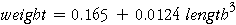

Fitting the Model by Least Squares
Fitting a linear model for weight against (length)3 by least squares gives the equation

It is worth remembering that a linear relationship between weight and (length)3 also implies a nonlinear relationship between weight and length.
On the left of the diagram below, the least squares line has been added to a scatterplot of weight against a power of length. Again drag the red line on the horizontal axis to the left until the transformation is (length)3.
On the right is a scatterplot of weight against untransformed slug length. Observe how the linear relationship between weight and (length)3 is equivalent to a curve on the scatterplot of weight and length.